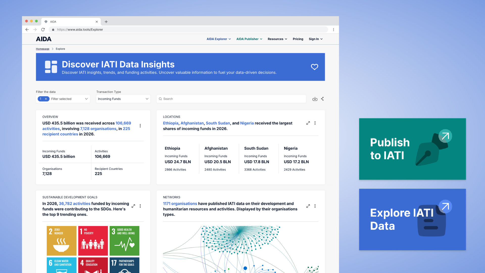

Lead UX/UI Designer · Milan
Designing for clarity in complex systems
Senior UX/UI designer with 5+ years of experience leading end-to-end design for data-intensive digital products. Currently shaping transparency tools for international development at Zimmerman BV — platforms that make global aid data legible and actionable.
Selected work

AIDA
Aid Information and Data Analytics — making international development funding legible at a global scale.
Global Fund Data Explorer
Interactive platform surfacing The Global Fund's grant and impact data for public accountability.

FoodFlow
Digital platform for food-aid NGOs. Enabling data forecasting and solidarity networks for food.

ENI One
A platform and annual event celebrating genuine feedback and employee recognition within ENI.

NHS App
A health monitoring app giving a holistic approach to health services, designed for NHS patients.

Glocal
Education ecosystem for nomadic students in 2037 — learning while travelling the world by train.
About & CV
I design digital systems that make complex, high-stakes information accessible to the people who need it most.
With 5+ years of experience in end-to-end product design, I specialise in turning ambiguous briefs into intuitive, accessible experiences. My work lives at the intersection of civic tech, international development, and systems thinking — combining participatory methodologies with a rigorous approach to information architecture and data visualisation.
Currently leading UX design at Zimmerman BV in Amsterdam, I shape platforms that surface aid data for NGOs, governments, and public accountability organisations — products used at a genuinely global scale.
My Master's thesis at Politecnico di Milano explored how participatory design processes build community agency. That question — who gets to shape the systems that shape their lives? — runs through everything I make.
Work Experience
Full-time
Lead UX/UI Designer
Zimmerman BV · Amsterdam, NL
Lead UX/UI designer on a suite of high-complexity data visualisation platforms for the international development sector — including AIDA, The Global Fund Data Explorer, DataXplorer, and several aid-data portals. Own the full design process from discovery and research through to interaction design, prototyping, and handoff. Collaborate directly with PMs, engineers, and NGO stakeholders. Establish and maintain design systems that scale across multiple platforms.
Freelance
UX & UI Designer
Here Fashion Hub · Milan, IT
Drove end-to-end design for HFH's digital presence — from brand identity and visual language through to a fully built Webflow site. Led concept exploration and prototyping in Figma and Illustrator, shaped the company's digital strategy, and presented design rationale directly to founders.
Full-time
Product Designer
Tolkido · İzmir, TR
Owned product design for an early-stage EdTech product for neurodivergent children. Delivered wireframes, low- and high-fidelity prototypes, and 3D concept renderings. Ran product testing sessions, contributing to a 20% increase in user engagement.
Education
MSc Product-Service System Design
Politecnico di Milano · Milan, IT
Thesis: 'Mapping Participation in Participatory Design' — an investigation into how design processes can build community agency and shape publics. Awarded the Invest Your Talent in Italy Scholarship. Selected to participate in the Uncertain Times Exhibition as a collaborating designer.
BA Global Design (Erasmus Exchange)
IADE Creative University · Lisbon, PT
BA Industrial Design
University of Economics · İzmir, TR
GPA 3.3 · Merit-based partial scholarship
Core Skills
Design Leadership
End-to-end product design, design direction, stakeholder alignment, design critique, cross-functional collaboration
UX & Research
User research, usability testing, participatory design, service design, information architecture, accessibility (WCAG)
UI & Systems
Design systems, component libraries, interaction design, data visualisation, responsive & mobile-first design
Tools
Design
Figma (Prototype, Dev Mode, FigJam), Framer, Principle, Lovable, Stitch, Webflow, Adobe Creative Cloud
Research & Testing
Maze, Hotjar, UserTesting, Miro
Data & Productivity
Tableau, RAW Graphs, Zeplin, Notion
Certifications & Memberships
-
2023
User Experience Research and Design Specialization
University of Michigan · Coursera
-
2022
Gender Analytics: Gender Equity Through Inclusive Design
University of Toronto · Coursera
-
2021 – Present
Member, Turkey Industrial Designers' Association
ETMK
-
2020 – 2021
"Gather, Complete, Design" Project Member
Architecture For All
Languages
Turkish
Native
English
C2 Proficient
Italian
B1 Intermediate


%201.png)